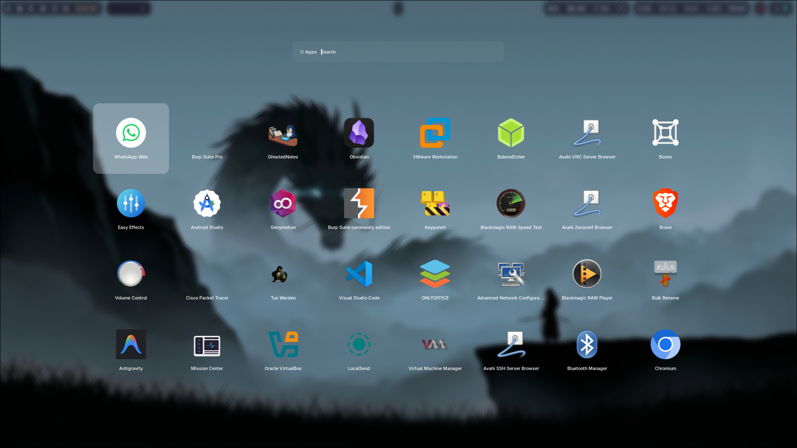
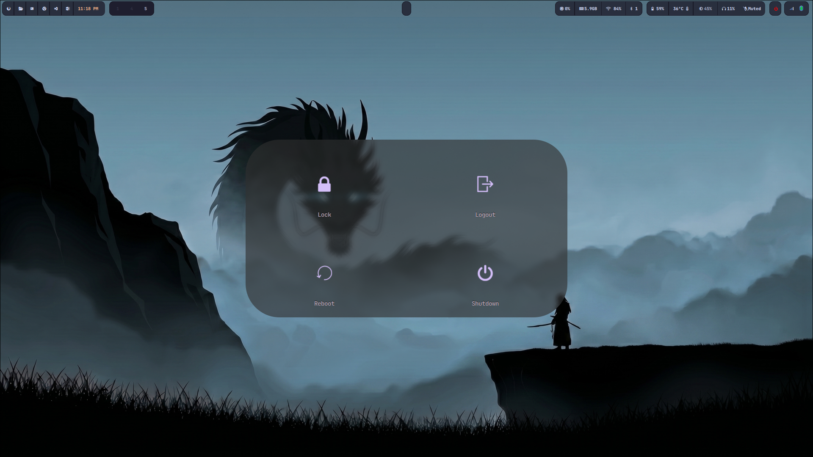
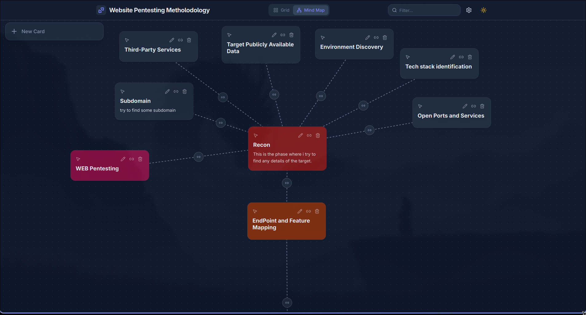
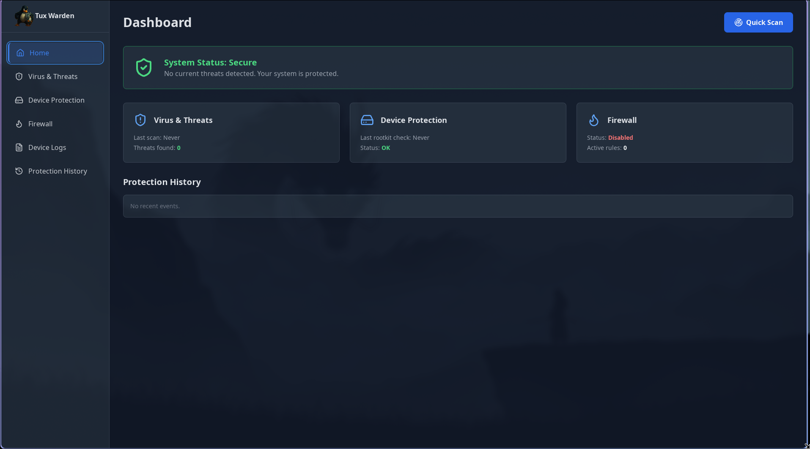
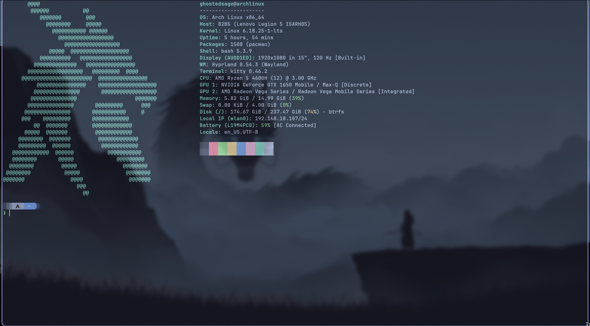

A stunning, perfectly tuned Arch Linux experience with a deeply immersive dark aesthetic.
Every pixel of Ghosted Arch is meticulously crafted with modern glassmorphism and dynamic micro-animations.

A full-screen, blazingly fast glassmorphic application launcher that puts everything you need at your fingertips.

Beautiful overlay menus for power management that seamlessly blend with your misty desktop background.
Ghosted Arch comes pre-equipped with custom-built applications that seamlessly integrate with the system's misty aesthetic.
A beautifully simple, markdown-powered note-taking experience with an immersive mind-map view to connect your thoughts dynamically.

The ultimate shield for Ghosted Arch. Advanced threat protection and system security tailored specifically for your Linux environment, defending your system in real-time.

Meticulously tuned custom configurations and branding assets compiled natively for your Arch installation.
Add the GhostedArch online repository to your system to install customized packages directly via Pacman:
[ghostedarch]
SigLevel = Optional TrustAll
Server = https://ghostedsage.github.io/ghostedarch/repo/x86_64Loading package metadata...
Beneath the cinematic surface lies the bleeding-edge performance of Arch Linux, powered by the Hyprland Wayland compositor.

Join the future of desktop environments. Ghosted Arch is waiting.